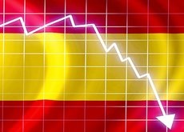

Antes de nada, reconocer que fui de los muchos que no tome las suficientes medidas ante la catastrofe búrsatil que vino. Eso sí una vez que el SP500 bajo casi hasta los 2.000 puntos fui uno de los pocos que vio ese punto como una gran oportunidad. Mientras muchos análistas avisaban de que la caída era poca comparado con la que venía, yo ya veía el oportunismo de esos mismos analistas que recomendaban comprar no haría muchas semanas. En ese momento la estrategia tenía que haber sido un cambio de carteras olvidandose de todo lo precedente ya que no valían ya los analisis fundamentales, error de muchos a la hora de comprar o vender.
A parte, hubo mucho oportunismo en empresas con poca capitalización para hundir la acción y cambiar acciones con amiguetes. Duro Felguera, Abengoa, Tubos Reunidos, pequeñas firmas inmobiliarias y gran parte del continuo.
Depende de los amiguismos unas recuperarían las primeras y otras ni siquiera todavía en 2021 han recuperado la mitad de la caída y en parte esta asimetría completa no es debido en la mayoría de los casos al coronavirus en sí si no a la manipulación por parte de unos pocos y a la nula actuación de la CNMV que en todo el año no ha tomado ninguna medida contra ninguna empresa. Lo único que hicieron fue prohibir las posiciones cortas durante 2 meses para contentar a algunos aunque estas posiciones no eran más que la información privilegiada que tienen algunos para realizar coberturas sobre valores que ellos mismos habían tirado previamente, para poder actuar más rapidamente en caso de que se produzca algun evento y tengan que recomprar. El mercado español es una mafia que se intuía pero este año se ha confirmado. Cuanto menos capitaliza es cuando más manipulado esta el valor, moviendolo pocas manos y jugando con los pocos inversores que tienen.
Muchos analistas al mes del covid19 descartaban la V y decían que la recuperación tardaría mucho. Una equivocación terrible y que sirve para dejar de leer ciertos diarios. Y es que economía y bolsa estan relacionados pero no van de la mano, el mercado se adelanta mucho a los acontecimientos y la simpre esperanza de la llegada de algo puede provocar tremendos movimientos. Esto ya lo sabía yo, y de hecho el ejemplo más claro estuvo en la crisis del petróleo de 2016 en la que el precio bajo hasta mínimos por la superproducción de Arabia. China aprovecho la situación para llenar sus depositos, llenando grandes superpetroleros que le dieron el consumo de un par de años a un precio irrisorio, por debajo de los 30 dolares el barril. No tardaría dos meses en recuperar la mitad de la caída y es justamente lo que ha pasado ahora y lo que seguirá pasando.
Los índices americanos en su gran rebote se llevaron a la mayoría de minoristas que apostaron en corto a toro pasado, y que se comieron toda la caída. Unos dicen que fue la FED que compro bolsa o bonos, otros que fueron las mismas empresas que vendieron que volvieron a recomprar. Lo que si es cierto es que los grandes cuando hacen movimientos de cambio de tendencia lo hacen contra mercado y cuando la mayoría no lo espera, por eso ante los precios que hubo no era muy dificil haberse posicionado en largo y esperar. Hay analistas que quieren ganar siempre la última gota y por esperar muchas veces se quedan fuera y es lo que ha pasado. Esperemos que recapaciten para la siguiente gran crisis que puede tardar 5 años como 20 años.
En la imagen siguiente se muestra como ha sido la recuperación de la bolsa y de la economía en diferentes crisis de la historia del siglo XX. En este caso la caída ha sido lo más abrupto posible ya que hasta ahora en un par de semanas no había caido tanto un índice. Es por ello que cuando sucecio y sabiendo que todo era miedo a algo que no se conocía pudiese darse un reverso muy rápido. Al final no ha sido tan rápido pero en menos de 6 meses índices como el NASDAQ o el SP500 estaban ya recuperados. El NASDAQ en máximos históricos. Los demás índices importantes como el DAX aleman o el DOW JONES tardarían un poco más. Muchos dicen que la recuperación sera en K ya que hay valores que no se conseguiran recuperar pero mi opinión es que sera en una V más larga en algunos y en otros se conseguirán cotas no imaginadas ya que se ha inyectado mucho dinero al sistema para estimular compras y actividad. Es como una V pero porque metes un factor que en teoría debería generar inflación pronto por lo que realmente tampoco es que todos los sectores sean beneficiados, sino que algunos estarán por detrás mas bien del sistema. El error ahora mismo es dejar tu dinero estático ya que en no menos de 5 años habrá perdido bastante valor frente al resto de valores, incluido valores refugio como el oro que han empezado de nuevo su ciclo alcista.
La estrategia clara fue centrarse en valores de tecnológicas y farmaceuticas o del sector sanitario y desprenderse de bancos o valores ciclicos como energía. Muy pocos dieron con el clavo que ante un confinamiento en la mayoría de paises estas empresas iban a ser el filón. Ni siqueira las renovables fueron en un principio la opción. Si bien han estado recuperando desde el principio de la pandemia.
Fue dificil de leer que valores en España como Pharmamar fueran a multiplicar por más de 10 su valor búrsatil. Cuando ya habían subido tres veces su valor fueron pocos los que se atrevieron a continuar o a entrar en el valor. Si bien es normal que haya caído un 50% desde máximos y aún cayendo un 25% más estaríamos ante una subida espectacular. Por mucho coronavirus que haya un valor no puede multiplicarse por 10 en 1 año. No es sostenible esa subida y si lo es es porque estaba muy devaluado al principio de la subida.
Ahora que el coronavirus esta llegando a su fin resulta lógico pensar en que estas empresas van perdiendo su atractivo en favor de otro tipo de empresas.
Tras las elecciones de USA ha habido un cambio brusco. Ha parado el rally del NASDAQ de los valores tecnológicos y en general de todo Estados Unidos hacia los países más castigados como España. Y es que se espera que las tensiones entre Europa y Estados Unidos comiencen a aflojar con Biden como presidente. El dolar ha vuelto a retroceder y el euro ya escala máximos no vistos en tres años.
Muchos analistas no esperaban la fuerte subida que pego el IBEX en noviembre tras una presión bajista no vista hasta entonces. Habia valores que cotizaban en mínimos historicos con una capitalización muy por debajo de su valor contable. Si bien el valor contable de los bancos esta falseado ya que la mayoría de activos no valen ni una cuarta parte de lo que dicen valer. Hoy en día todo lo derivado de prestamos o del sector inmobiliario vale una cuarta parte a precios de mercado actuales.
Valores como Santander, Repsol, BBVA son los que mayor recuperación han llevado desde minimos, habiendo ya superado el 61,8% de fibonacci y se espera que en 1 año lleguen a doblar su valor, siendo el objetivo de 3, 10 y 5 euros respectivamente.
Tras las escaladas de valores como SIEMENS GAMESA o Solaria que cotizan con un PER elevadisimo y que ni en 10 años conseguiran tener ese valor con los beneficios que se preveen hay que optar por valores que todavía no han descontado el fin de la pandemia ya que esos valores ante cualquier bajada generalizada corregiran y mucho.
En España estos valores como SOLTEC, SOLARPACK, GRENOBLY RENOVABLES han pegado una subida exponencial que para nada se ajusta a su valor, es por ello si estas dentro tener un stop ajustado. AUDAX RENOVABLES esta cerca de objetivos, 2,44. Por lo que pasa exactamente lo mismo que los anteriores. Invertir en renovables ahora mismo no es bueno, los grandes fondos y bancos lo han hecho en Noviembre y estarían empezando pronto a recoger beneficios.
Es uno de los sectores estrella del momento. Nunca en la historia han cotizado a un valor tan bajo. Se estima que los tipos de interes no suban hasta dentro de 10 años pero nadie sabe nada a ciencia cierta. Cualquier cambio podría hacer dispararse este tipo de activos y es que la llegada de la inflación podría ser la señal del pistoletazo de compras en este sector. El valor de la inflación se conoce mes a mes, pero el valor real es algo más complejo ya que hay que descontar subidas de precio como luz y petróleo para tener una mejor visión. Es por ello que estar comprado a estos precios es muy buena opción.
Este sector esta ya casi recuperado también y fue uno de los primeros en levantarse del hachazo de Marzo y Abril, siendo ACS el mejor ejemplo de ello. Valores como ACS, Ferrovial o Sacyr estan ya a poco de recuperar toda la caída. Son valores que todavía pueden subir más y deberían recuperar su valor precovid según la crisis vaya aminorando.
Es uno de los sectores más defensivos ante cualquier catastrofe, ahora mismo algunos valores cotizan con descuento pero ya han recuperado casi todo lo perdido en mínimos del año pasado. Es bueno tener un pequeño porcentaje en este tipo de activos en una situación en la que todavía no se ha llegado a salir del todo de la crisis y en el que hay dudas de que el coronavirus se alargue más de lo previsto. Si la situación mejorara y la mayoría de los sectores estauvieran ajustados se podría meter bastante en este saco. Ante una situación regular de la economía. Ahora no es el momento.
Es uno de los sectores más afectado ante recesiones de este tipo. La menor demanda hace que los precios caigan y las compañias deben vender lo justo. Ahora mismo muchas compañías cotizan a precio de derribo con valor de activos muy por encima de su valoración en bolsa pero es que esos activos estan auditados a un valor muy alto y podrían ser vendidos a la mitad de precio si fuera necesario. Sobre todo compañías con una gran deuda. Es mejor estar al margén y seguir esperando, o estar metido con un valor de cartera pequeño. Es el extremo contrario al sector ENERGÍA.
Es uno de los valores más castigados y las consecuencias aún no estan descontadas del todo. Se puede ir metiendo en las correcciones pero ha habido oportunidades para entrar, siendo un ejemplo de ello IAG que ha llegado a estar a 1 euro la acción, ahora mismo sería 2 euros de las antiguas ya que ha habido una ampliación por el doble del valor anterior. Los restaurantes lo mismo, dependiendo de la caída, de la deuda que tuvieran antes de la crisis hay que mirar con lupa valor a valor.
El sector hotelero cotiza a la mitad de valor habiendo subido ya el doble ya que hubo grandes caídas como Melia que paso de 8,5 euros a 2,5 euros. No recomendaría entrar a estos precios ya que me parece bastante caro pensando en que todavía quedan años duros, si bien a por debajo de 4 euros era una buena oportunidad.
© 2016 - All Rights Reserved - Diseñada por Sergio López Martínez
El sitio se mantiene gracias a la publicidad, por favor Desactiva Adblock para seguir navegando
He desactivado Adblock![[Valid RSS]](https://www.onepointsync.com/wp-content/uploads/2016/08/valid-rss-rogers.png "Validate my RSS feed")